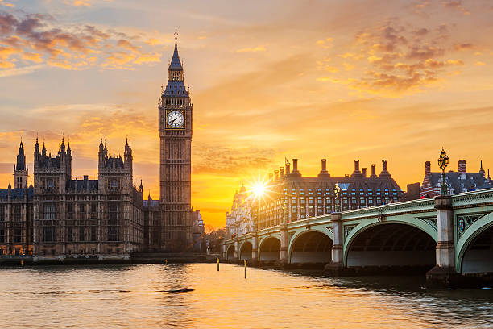

Welcome
London has slowly become like a second home for me since my partner lives there and I go often to visit him. Every time I go, I find a new restaurant to eat at, a new attraction that isn't talked about enough, and a new tip that would be helpful for tourists. I've gotten acquainted enough that I'm able to comfortably create itineraries for family and friends that would like to visit London — or now have, with my help.
English gastronomy isn't the best in my opinion, however there are plenty of restaurants that are delicious and affordable that I always find myself going back to. I can probably thank England for tripling my list of unsavory restaurants that I would never return to, which has made me wary of discovering new restaurants. The English seem to love to critique American food, however their food isn't the best either. They've somehow made Taco Bell bland and coffee taste burnt, so I recommend restaurants and food joints with passion for those visiting.
Despite all the things one can see in London — because they truly have something for every type of traveler — there is so much to see outside of London and England. Both the city and country are easily connected to other English cities and mainland Europe. One can easily have weekend trips from London to France, Belgium, and the Netherlands.
